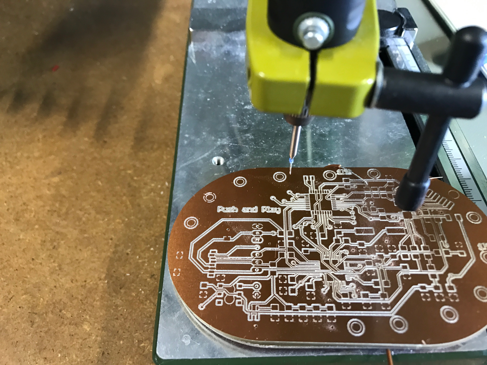

Push ‘n’ Play
Interactive Sound Posters
The interdisciplinary Push’n’play project focuses on design, sound, and electronics and aims to develop a poster that communicates to people through tangible interaction. The objective of this workshop was to provide a practical approach for learning about electronics through engaging practices such as screen printing. Over a period of six weeks, students had the opportunity to get in touch with poster design, conductive ink, screen printing method, sound design, electronic circuits, microcontroller boards and programming.
Motivation
This workshop aims to connect “traditional” and “modern” techniques, such as programming and the old printing process. We want to encourage younger generations to learn more about handmade crafts and complement them with digital manufacturing.
The online version tile FabLab Kamp-Lintfort

Beatbox Siri
By Thi Yen-Thu Nguyen, Dylis Lee, Christian Stengel and Marcello Tania
Hochschule Rhein-Waal
FabLab Kamp-Lintfort
Date: March 2018

African Mask
Darwish, Doaa
Hochschule Rhein-Waal
FabLab Kamp-Lintfort
Date: December 2017
Touch Midi
Anastasia gilz, Rafael Regh, Diego Torres
Hochschule Rhein-Waal
FabLab Kamp-Lintfort
Date: October 2017


Lecture by:
Jana-Lina Berkenbusch,
Adriana Cabrera,
Thomas Laubach,
Ralr Postulka
Hochschule Rhein-Waal
I FabLab Kamp-Lintfort
I MediaLab
I Screen Printing Lab
Powered by: Association Campus Kamp-Lintfort e. V.